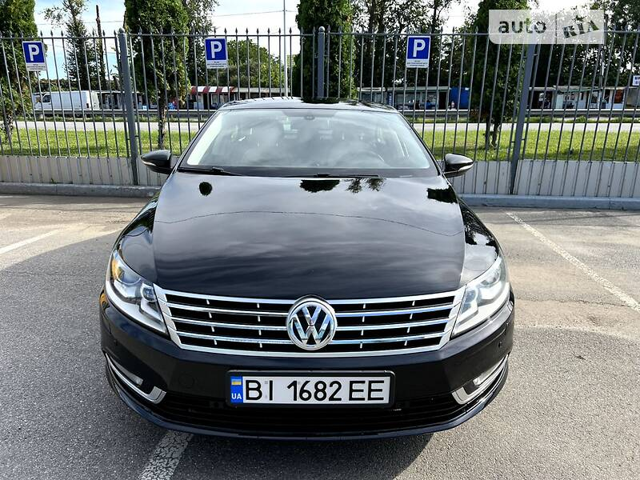
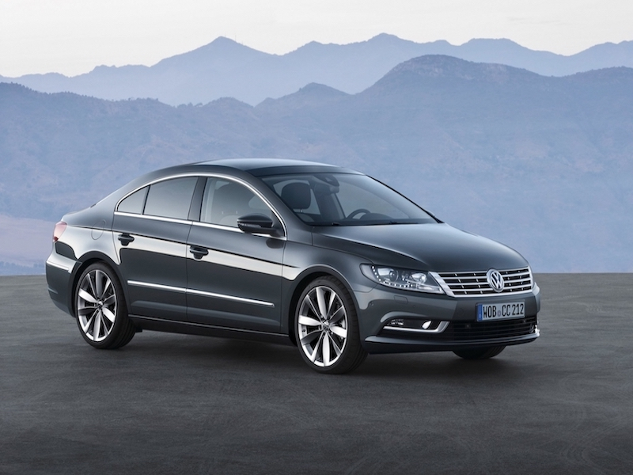
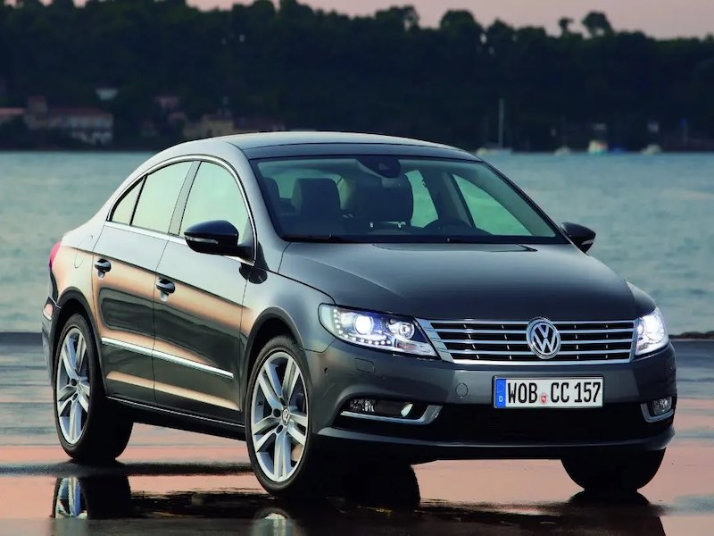

Volkswagen Passat CC
Volkswagen Passat CC – чотиридверний седан-купе, сконструйований на базі VW Passat B6 (Typ 3C), випускався з 2008 по 2016 р. на заводі концерну Volkswagen у місті Емден.
Опис моделі
Літери -CC- у назві моделі розшифровуються як «комфорт-купе» (нім. Comfort-Coupé), до якого тяжіє більш «розплющена», спортивна форма кузова моделі. Однак ця модель замислювалася керівництвом концерну Volkswagen не як модифікація звичайного Passat'а, а як авто іншого, більш комфортного класу - для заповнення ринкової ніші між класичним Passat'ом і моделлю Phaeton.
Вперше Passat CC був представлений на автосалоні в Детройті в 2008. Цього ж року почалося виробництво в Європі, а через півроку і в США.
Рестайлінг
У січні 2012 року на Автосалоні в Лос-Анджелесі була представлена оновлена версія Passat CC. Були оновлені грати радіатора, інтер'єр салону та фари. Нова версія автомобіля надійшла у продаж у Росії 21 квітня 2012 року.
Dynamic Black
У червні 2015 року Volkswagen представив спеціальну версію CC, яка отримала приставку Dynamic Black у назві [1]. Серед відмінностей цієї версії від звичайного CC можна назвати такі.
- Екстер'єр
- Змінена решітка радіатора
- Прибрано хромовані смуги навколо вікон
- Прибрано хромовані смуги на дверях і задньому бампері.
- Чорні накладки дзеркал
- Інтер'єр:
- Магнітол Discover Media
- Карбонові вставки на сидіннях
- R-Line накладки на порогах
- Накладки центральної консолі чорний глянець
- Карбонові накладки торпедо та панелі дверей
- Інші регулятори регулювання дзеркал та блоку клімат комфорту